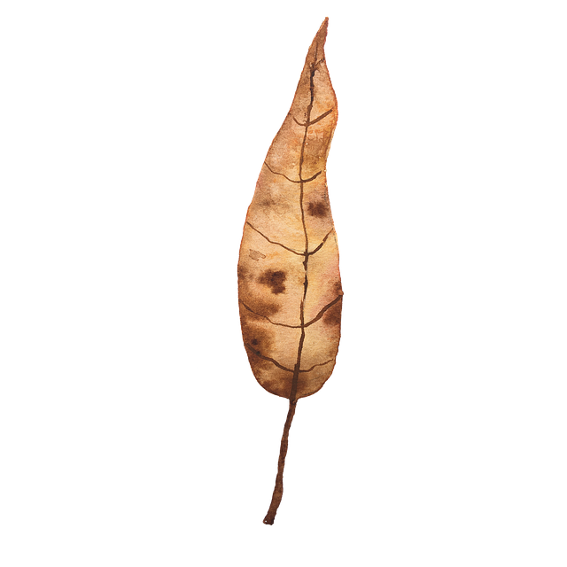

Control your character Pepe
Amigo… hör gut zu.
Dies ist die Geschichte von Pepe, dem mutigsten Mann in ganz Mexiko.
In El Pollo Loco kämpft er sich durch eine Welt voller verrückter Hühner –
Hühner, die so loco sind, dass selbst der Tequila Angst bekommt.
Zum Glück hat Pepe seine treuen Salsa-Flaschen bei sich.
Und glaub mir, mi amigo… diese verrückten Hühner hassen Salsa mehr als alles andere.
Level 1: Babychickens
Level 2: Babychickens und Chickens
Level 3: Chickens und der Endboss Chicken#
Und jetzt, Amigo… beginnt Peps Reise.